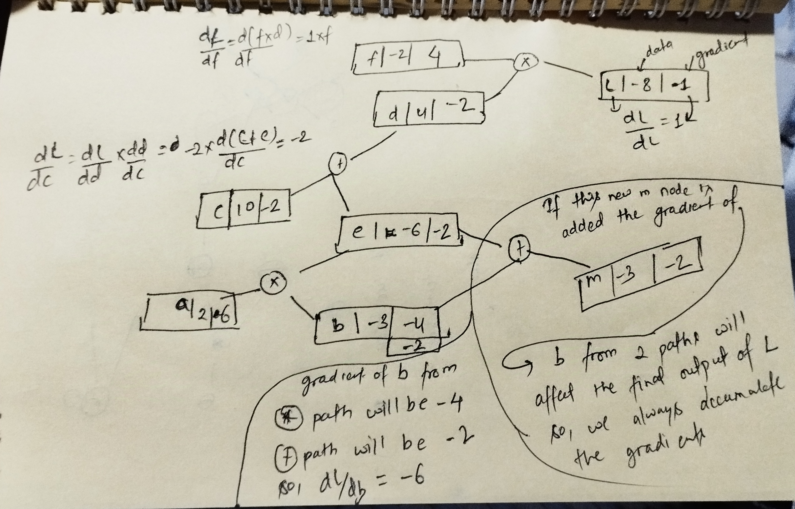

Source: The spelled-out intro to neural networks and backpropagation: building micrograd
Backpropagation on paper
It implements backpropagation for two arithmetic operation (multiplication and addition) which are quite straightforward.
Implementation is for this equation.
a = Value(2.0, label='a')
b = Value(-3.0, label='b')
c = Value(10.0, label='c')
e = a*b; e.label = 'e'
d = e + c; d.label = 'd'
f = Value(-2.0, label='f')
L = d * f; L.label = 'L'
L
 The most important thing to note here is the gradient accumulation step (shown at the bottom-left). If a node takes part two times building up to the final node. The gradient for that node is accumulated. For instance, in the figure node b takes part two times. First, it is involved in equation e = a * b, and another is e = b + m (not in the equation above).
Code
class Value:
def __init__(self,data, _children = (), _op = '', label=None):
self.data = data
self.label = label
self.grad = 0.0
self._prev = set(_children)
self._op = _op
self._backward = lambda: None
def __repr__(self):
return f"Value({self.label}, {self.data})"
def __add__(self, other):
result = Value(self.data + other.data, (self, other), '+')
def _backward():
self.grad = 1.0 * result.grad
other.grad = 1.0 * result.grad
result._backward = _backward
return result
def __sub__(self,other):
result = Value(self.data - other.data)
result._prev = [self, other]
result._op = '-'
return result
def __mul__(self,other):
result = Value(self.data * other.data, (self, other), '*')
def _backward():
self.grad = other.data * result.grad
other.grad = self.data * result.grad
result._backward = _backward
return result
def backward(self):
topo = []
visited = set()
self.grad = 1
def build_topo(v):
if v not in visited:
visited.add(v)
for child in v._prev:
build_topo(child)
topo.append(v)
build_topo(self)
topo = list(reversed(topo))
print('gg', topo)
for i in topo:
print(i)
i._backward()